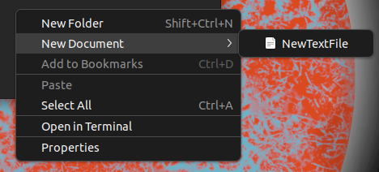

An unironic Ubuntu recomendation

My GNU/Linux journey started on Mint back in 2021. Since then I have tried Fedora, OpenSUSE, Void, MX, Debian, and avoided Ubuntu on purpose. Snaps are evil and slow, and Ubuntu is spyware, correct?...
The good
During my short usage, I've completely changed my mind and started loving almost everything about it.
Autocomplete in the terminal
On all of the other distros I've used, bash would autocomplete package names only if I were to remove them. I'm sure this can be replicated anywhere else, but it's extremely useful and enabled out of the box.
Actually meaningful GNOME tweaks
"They just install a bunch of extensions." Really? Such as an extension allowing you to pick an accent color?
This also translates to highlighed text by the way
Tray icons are included by default as well
Ubuntu Pro
Yup, my 22.04 is supported until 2032 now. My drive is very likely not going to last that long, but a system with 9 years of support is definitely not something to write off as useless. According to their website, you will be getting security patches 1 day after the patch is available.
It's there, and it's completely free for up to 5 machines. Enjoy additional security.
The elephant in the room
Snapcraft . According to a lot of people it's a way for Canonical to control the packaging on Linux.
. According to a lot of people it's a way for Canonical to control the packaging on Linux.
It may be reinventing the wheel, their performance is not much worse compared to flatpaks, and they actually have some advantages.
Cleaner commands
There is no need to type out full package names like with flatpak.
Configuration in plain sight
With flatpak I would have to search up where the hell is the configuration directory. With Snap, it's right in my home directory.
So what we have here is a flatpak-like system with simpler commands and easily accessible config directories.
"But proprietary backend" doesn't make a lot of sense as an argument, considering flathub admins may distribute different versions of the software if they so wish.
Summary
I think this system doesn't deserve the hate it keeps getting, especially from people using ubuntu-based distros. Snaps doesn't negatively affect you, the default GNOME implementation is well done, and you will never have to worry about having to update to a new version.
Also, a quick pro-tip before I go. This applies to GNOME in general but I want to put it here regardless.

When you create a new text file in this folder, it will appear in your right click menu. No need to thank me.
